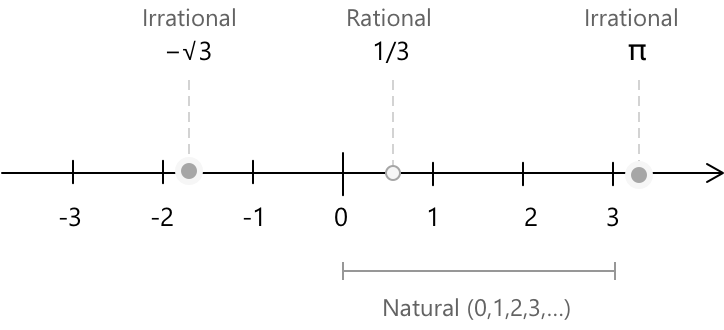
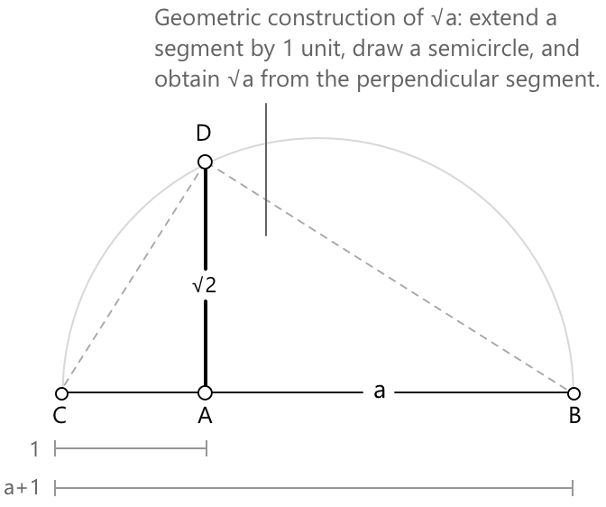

Радикали
Означення радикалів
Радикали виникають із задачі розв'язання рівнянь вигляду \( x^n = a \), де \( n \in \mathbb{N} \), \( n \ge 2 \), та \( a \in \mathbb{R} \). У цьому контексті корінь \( n \)-го степеня числа визначається як значення, чий \( n \)-й степінь дає початкове число.
Якщо \( a \ge 0 \), то головним дійсним коренем \( n \)-го степеня з \( a \) є єдине невід'ємне дійсне число \( b \), що задовольняє рівність \( b^n = a \). Це значення позначається як \( \sqrt[n]{a} \). Визначальною властивістю є те, що \( \sqrt[n]{a} = b \) тоді і тільки тоді, коли \( b^n = a \) та \( b \ge 0 \). Умова \( b \ge 0 \) гарантує єдиність у дійсному випадку, коли \( n \) є парним.
Значення \( a \) називається підкореневим виразом, а ціле число \( n \) відоме як показник кореня. Цей запис визначає як операцію добування кореня, так і його степінь.
Властивості коренів залежать від того, чи є показник парним чи непарним.
- Для парного \( n \) рівняння \( x^n = a \) має дійсне розв'язання тільки якщо \( a \ge 0 \), у якому випадку головним коренем \( \sqrt[n]{a} \) є невід'ємне розв'язання.
- Для непарного \( n \) рівняння \( x^n = a \) має рівно одне дійсне розв'язання для кожного дійсного числа \( a \), тому функція \( a \mapsto \sqrt[n]{a} \) визначена для всіх \( a \in \mathbb{R} \).
Наприклад, оскільки \( 2^3 = 8 \), звідси випливає, що \( \sqrt[3]{8} = 2 \), оскільки 2 є єдиним дійсним числом, куб якого дорівнює 8. Загалом, добування кореня \( n \)-го степеня є оберненою операцією до піднесення числа до степеня \( n \). Отже, розв'язання рівняння \( x^n = a \) еквівалентне застосуванню кореня \( n \)-го степеня до \( a \).
Радикали, такі як \( \sqrt{2} \), \( \sqrt{3} \) та \( \sqrt{5} \), класифікуються як ірраціональні числа, оскільки їх неможливо представити як точні дроби з двох цілих чисел.

Їхні десяткові розклади є нескінченними та неперіодичними, без будь-якої передбачуваної закономірності. Жодне раціональне число в квадраті не дає 2, 3 або 5. Тим не менш, ці значення займають точні позиції на прямій дійсних чисел, перемішані з раціональними числами, без жодних проміжків.
Формально, якщо \( a \in \mathbb{N} \) не є повним квадратом, то \( \sqrt{a} \notin \mathbb{Q} \).
Квадратні корені не завжди є ірраціональними. Квадратний корінь з повного квадрата, такого як \(4\) або \(9\), є раціональним. Натомість квадратний корінь з числа, що не є повним квадратом, такого як \(2\) або \(5\), є ірраціональним, оскільки його неможливо представити у вигляді дробу.
Чому \( \sqrt{2} \) ірраціональне?
Щоб довести, що \( \sqrt{2} \) не є раціональним числом, розглянемо доведення від супротивного. Припустимо, що \( \sqrt{2} \) є раціональним. Тоді його можна представити як дріб із двох цілих чисел, скорочений до найменших цілих, де \( a, b \in \mathbb{Z} \), \( b \neq 0 \), та \( \gcd(a,b) = 1 \):
\[ \sqrt{2} = \frac{a}{b} \]
\( \gcd(a,b) \) позначає найбільший спільний дільник \( a \) та \( b \), який є найбільшим додатним цілим числом, що ділить обидва числа. Умова \( \gcd(a,b) = 1 \) вказує на те, що \( a \) та \( b \) є взаємно простими, тобто вони не мають спільних дільників, окрім 1. Таким чином, дріб \( a/b \) вже є скороченим.
Піднесемо обидві частини до квадрата: \[ 2 = \frac{a^2}{b^2} \to a^2 = 2b^2 \]
Це означає, що \( a^2 \) є парним, звідси \( a \) також має бути парним. Отже, ми можемо записати \( a = 2k \) для деякого цілого числа \( k \). Підставимо назад: \[ (2k)^2 = 2b^2 \to 4k^2 = 2b^2 \to b^2 = 2k^2 \]
Це означає, що \( b^2 \) також є парним, отже \( b \) також має бути парним. Але якщо і \( a \), і \( b \) є парними, вони мають спільний множник \(2\), що суперечить нашому початковому припущенню, що \(\dfrac{a}{b}\) є скороченим дробом. Це означає, що \(\sqrt{2}\) є ірраціональним.
Степені з раціональними показниками
Зв'язок між коренями та степенями стає очевидним, коли показник є раціональним числом. Для \( a \in \mathbb{R}^+ \) та \( n \in \mathbb{N} \) при \( n \ge 1 \), корінь \( n \)-го степеня з \( a \) еквівалентно записується як:
\[ \sqrt[n]{a} = a^{\frac{1}{n}} \]
У більш загальному випадку, для \( m \in \mathbb{Z} \), корінь, підкореневий вираз якого піднесено до цілого степеня, відповідає степеню з раціональним показником \( \frac{m}{n} \):
\[ \sqrt[n]{a^m} = a^{\frac{m}{n}} \]
Це представлення є не просто нотаційним зручністю. Оскільки корені є степенями з раціональними показниками, всі стандартні правила піднесення до степеня поширюються на них без змін. Для \( a,\, b \in \mathbb{R}^+ \) та \( \frac{m}{n},\, \frac{p}{q} \in \mathbb{Q} \):
\[ \begin{align} a^{\frac{m}{n}} \cdot a^{\frac{p}{q}} &= a^{\frac{m}{n}+\frac{p}{q}} \\[6pt] \dfrac{a^{\frac{m}{n}}}{a^{\frac{p}{q}}} &= a^{\frac{m}{n}-\frac{p}{q}} \\[6pt] \left(a^{\frac{m}{n}}\right)^{\frac{p}{q}} &= a^{\frac{m}{n} \cdot \frac{p}{q}} \end{align} \]
Наприклад, \( \sqrt{a^3} = a^{\frac{3}{2}} \), \( \sqrt[3]{a^2} = a^{\frac{2}{3}} \), та \( \sqrt[4]{a} = a^{\frac{1}{4}} \).
Властивості
Наступні тотожності визначають маніпуляції з коренями. Кожна властивість сформульована з умовами щодо підкореневого виразу та показника, необхідними для того, щоб вираз залишався визначеним у дійсних числах; ці умови залежать, зокрема, від того, чи є показник парним чи непарним.
Для \( a \ge 0 \), \( n \in \mathbb{N} \) при \( n \ge 1 \), та \( m \in \mathbb{Z} \), будь-який корінь можна записати як степінь з раціональним показником:
\[ \sqrt[n]{a^m} = a^{\frac{m}{n}} \]
Якщо \( n \) парне, умова \( a \ge 0 \) є необхідною для того, щоб залишатися в області дійсних чисел.
Для \( n \in \mathbb{N} \) при \( n \ge 2 \), корінь \( n \)-го степеня розподіляється відносно множення та ділення:
\[ \sqrt[n]{ab} = \sqrt[n]{a}\,\sqrt[n]{b} \]
\[ \frac{\sqrt[n]{a}}{\sqrt[n]{b}} = \sqrt[n]{\frac{a}{b}} \]
Якщо \( n \) парне, правило множення вимагає \( a \ge 0 \) та \( b \ge 0 \), а правило ділення вимагає \( a \ge 0 \) та \( b > 0 \), щоб залишатися в області дійсних чисел. Якщо \( n \) непарне, обидві тотожності виконуються для всіх допустимих дійсних значень: будь-яких \( a,\, b \in \mathbb{R} \) для добутку та будь-яких \( a \in \mathbb{R} \), \( b \in \mathbb{R} \setminus {0} \) для частки.
Для \( a \ge 0 \), \( n \in \mathbb{N} \) при \( n \ge 1 \), та \( m \in \mathbb{Z} \), піднесення кореня до цілого степеня еквівалентне піднесенню підкореневого виразу до цього степеня з подальним добуванням кореня:
\[ \left(\sqrt[n]{a}\right)^m = \sqrt[n]{a^m} \]
Якщо \( n \) парне, умова \( a \ge 0 \) необхідна для того, щоб залишатися в області дійсних чисел.
Нехай \( k \in \mathbb{N} \) при \( k \ge 1 \). Множення як показника кореня, так і степеня підкореневого виразу на одне й те саме додатне ціле число \( k \) не змінює значення кореня:
\[ \sqrt[n]{a^m} = \sqrt[nk]{a^{mk}} \]
Ця тотожність дозволяє скоротити показник кореня до найпростішого вигляду. Наприклад, \( \sqrt[4]{a^2} = \sqrt[2]{a} = \sqrt{a} \), що отримано шляхом ділення обох показників на 2. Якщо \( n \) парне, застосовується умова \( a \ge 0 \).
Для \( a \ge 0 \) та \( m,\, n \in \mathbb{N} \) при \( m,\, n \ge 1 \), вкладений корінь зводиться до одного кореня, показник якого є добутком двох показників:
\[ \sqrt[m]{\sqrt[n]{a}} = \sqrt[mn]{a} \]
Якщо \( m \) або \( n \) є парним, умова \( a \ge 0 \) необхідна для того, щоб залишатися в області дійсних чисел. Якщо і \( m \), і \( n \) є непарними, тотожність виконується для всіх \( a \in \mathbb{R} \).
Корінь \( \sqrt[n]{a^m} \) можна спростити, коли \( m \ge n \), розклавши показник як \( m = nq+r \), де \( q \) — частка, а \( 0 \le r < n \) — остача від ділення \( m \) на \( n \). Тоді множник \( a^q \) можна винести за знак кореня:
\[ \sqrt[n]{a^m} = \sqrt[n]{a^{nq+r}} = a^q\,\sqrt[n]{a^r} \]
Наприклад, \( \sqrt{a^5} = \sqrt{a^4 \cdot a} = a^2\sqrt{a} \), оскільки \( 5 = 2 \cdot 2+1 \). Аналогічно, \( \sqrt[3]{a^7} = a^2\,\sqrt[3]{a} \), оскільки \( 7 = 3 \cdot 2+1 \). Умова \( a \ge 0 \) застосовується, коли показник є парним.
Два корені називаються подібними, якщо вони мають однаковий показник і однаковий підкореневий вираз. Подібні корені можна додавати та віднімати, комбінуючи їхні коефіцієнти, так само як і подібні доданки в поліномі:
\[ p\,\sqrt[n]{a}+q\,\sqrt[n]{a} = (p+q)\,\sqrt[n]{a} \]
Наприклад: \[ 3\sqrt{2}+5\sqrt{2} = 8\sqrt{2} \] \[ 7\sqrt[3]{5}-2\sqrt[3]{5} = 5\sqrt[3]{5} \]
Корені з різними показниками або різними підкореневими виразами не є подібними і не можуть бути об'єднані таким чином. У деяких випадках спрощення може показати, що два корені насправді є подібними. Наприклад:
\[ \sqrt{12}+\sqrt{3} = 2\sqrt{3}+\sqrt{3} = 3\sqrt{3} \]
оскільки:
\[ \sqrt{12} = \sqrt{4 \cdot 3} = 2\sqrt{3} \]
Приклад 1
Спростіть наступний вираз і запишіть результат у вигляді кореня:
\[ \frac{\sqrt{a}}{\sqrt[3]{a}} \]
Перетворивши кожен корінь у степінь з раціональним показником:
\[ \sqrt{a} = a^{\frac{1}{2}} \qquad \sqrt[3]{a} = a^{\frac{1}{3}} \]
Застосовуючи правило ділення для степенів:
\[ \frac{a^{\frac{1}{2}}}{a^{\frac{1}{3}}} = a^{\frac{1}{2}-\frac{1}{3}} = a^{\frac{1}{6}} \]
Отже, отримаємо:
\[ \frac{\sqrt{a}}{\sqrt[3]{a}} = \sqrt[6]{a} \]
Позбавлення від ірраціональності в знаменнику
Вираз, що містить ірраціональність у знаменнику, зазвичай переписують у рівнозначній формі, в якій знаменник не містить радикалів. Цей процес називається позбавленням від ірраціональності в знаменнику і полягає в множенні чисельника та знаменника на відповідний вираз без зміни значення дробу. Якщо знаменник є одним радикалом \( \sqrt[n]{a^m} \), метою є доведення показника \( a \) всередині радикала до кратного \( n \). Множення чисельника та знаменника на \( \sqrt[n]{a^{n-m}} \) дає ціле число в знаменнику:
\[ \frac{1}{\sqrt[n]{a^m}} \cdot \frac{\sqrt[n]{a^{n-m}}}{\sqrt[n]{a^{n-m}}} = \frac{\sqrt[n]{a^{n-m}}}{\sqrt[n]{a^n}} = \frac{\sqrt[n]{a^{n-m}}}{a} \]
Найпоширенішим випадком є \( n = 2 \) та \( m = 1 \), коли знаменник є квадратним коренем:
\[ \frac{1}{\sqrt{a}} \cdot \frac{\sqrt{a}}{\sqrt{a}} = \frac{\sqrt{a}}{a} \]
Коли знаменник має вигляд \( \sqrt{a}+\sqrt{b} \) або \( \sqrt{a}-\sqrt{b} \), множення на спряжений вираз усуває радикали шляхом застосування формули різниці квадратів \( (x+y)(x-y) = x^2-y^2 \):
\[ \frac{1}{\sqrt{a}+\sqrt{b}} \cdot \frac{\sqrt{a}-\sqrt{b}}{\sqrt{a}-\sqrt{b}} = \frac{\sqrt{a}-\sqrt{b}}{a-b} \qquad a \ne b,\; a,b \ge 0 \]
Наприклад:
\[ \begin{align} \frac{1}{\sqrt{3}+\sqrt{2}} &= \frac{\sqrt{3}-\sqrt{2}}{(\sqrt{3})^2-(\sqrt{2})^2} \\[6pt] &= \frac{\sqrt{3}-\sqrt{2}}{3-2} \\[6pt] &= \sqrt{3}-\sqrt{2} \end{align} \]
Приклад 2
Позбавлення від ірраціональності також може бути застосоване до чисельника, якщо це спрощує вираз. Розглянемо наступну границю, яка природним чином виникає в означенні похідної:
\[ \lim_{h \to 0} \frac{\sqrt{x+h}-\sqrt{x}}{h} \]
Пряма підстановка \( h = 0 \) дає невизначеність \( \frac{0}{0} \). Щоб розв'язати це, помножимо чисельник і знаменник на спряжений вираз до чисельника:
\[ \begin{align} \frac{\sqrt{x+h}-\sqrt{x}}{h} &= \frac{\sqrt{x+h}-\sqrt{x}}{h} \cdot \frac{\sqrt{x+h}+\sqrt{x}}{\sqrt{x+h}+\sqrt{x}} \\[6pt] &= \frac{(x+h)-x}{h\left(\sqrt{x+h}+\sqrt{x}\right)} \\[6pt] &= \frac{h}{h\left(\sqrt{x+h}+\sqrt{x}\right)} \\[6pt] &= \frac{1}{\sqrt{x+h}+\sqrt{x}} \end{align} \]
Обчислимо границю при \( h \to 0 \):
\[ \lim_{h \to 0} \frac{1}{\sqrt{x+h}+\sqrt{x}} = \frac{1}{2\sqrt{x}} \]
Цей результат є похідною від \( \sqrt{x} \), отриманою тут без використання загального правила степеня.
Геометричне побудова відрізка \(\sqrt{a}\)
Квадратний корінь \(\sqrt{a}\) — це більше ніж просто число: його можна побудувати як відрізок, використовуючи лише циркуль і лінійку. Цей метод перетворює алгебраїчну ідею в геометричну форму, розкриваючи глибокий зв'язок між числами та фігурами. Маючи відрізок довжиною \(a\), виконайте наступні кроки:
-
Накресліть відрізок \(AB\) довжиною \(a\).
-
Продовжте відрізок вліво на 1 одиницю. Нехай точка \(C\) буде такою, що \(CA = 1\). Тепер \(CB = a + 1\).
-
Накресліть півколо з діаметром \(CB\).
-
З точки \(A\) проведіть перпендикуляр до \(CB\), що перетинає півколо в точці \(D\).
-
Відрізок \(AD\) має довжину \(\sqrt{a}\).

Насправді, у прямокутному трикутнику \(\triangle DAB\) відрізок \(AD\) є висотою, проведеною з точки \(A\) до гіпотенузи \(CB\). Згідно з теоремою Евкліда для прямокутних трикутників, висота є середнім геометричним двох відрізків, на які вона ділить гіпотенузу. Тобто:
\[ \frac{AC}{AD} = \frac{AD}{AB} \]
Множачи обидві частини на \(AD\), отримаємо:
\[ AD^2 = AB \cdot AC \]
Оскільки \(AC = 1\) та \(AB = a\), знайдемо:
\[ AD^2 = a \cdot 1 = a \quad \rightarrow \quad AD = \sqrt{a} \]
Це завершує побудову: відрізок \(AD\) має довжину, що точно дорівнює \(\sqrt{a}\).